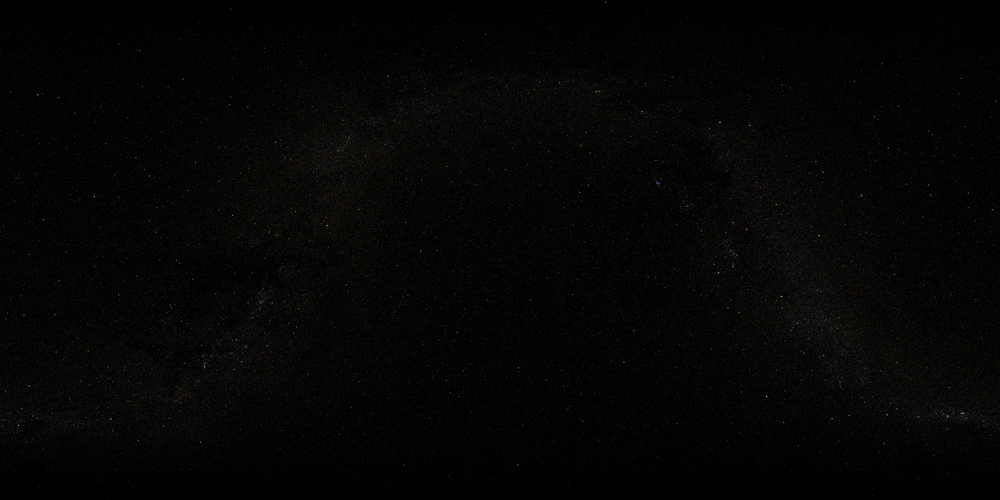
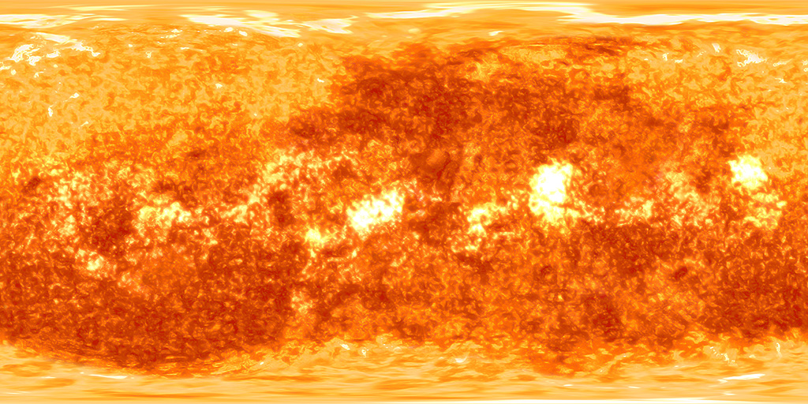
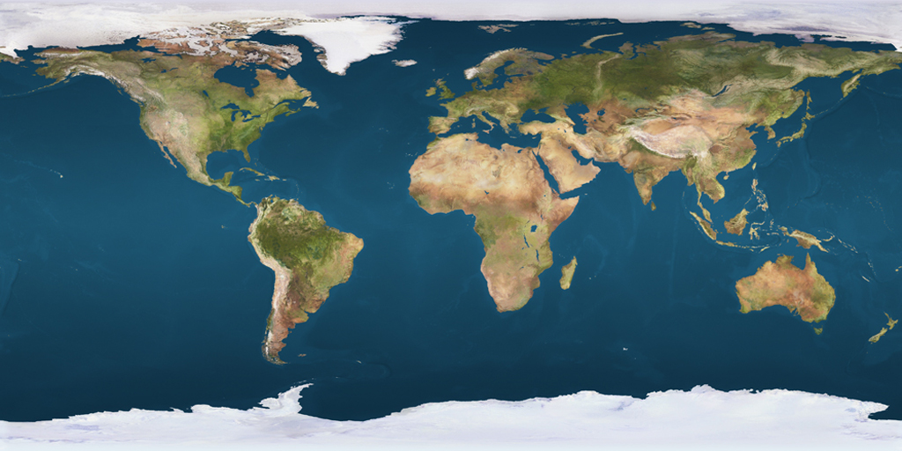

Oops ... your browser doesn't support the HTML5 canvas element
  
Sun Spinning Speed (km/s)
2
Seconds Per Year
7
Orbit Spinning Speed (km/s)
1
▼
Mercury
Orbital Speed (km/s)
47.9
Spinning Speed (km/s)
10.9
▼
Venus
Spinning Speed (km/s)
6.52
Orbital Speed (km/s)
35.0
▼
Earth
Orbital Speed (km/s)
29.8
Spinning Speed (km/s)
1574
Moon Orbital Speed (km/s)
1.022
Moon Spinning Speed (km/s)
58.3
▼
Mars
Orbital Speed (km/s)
29.8
Spinning Speed (km/s)
866
▼
Jupiter
Spinning Speed (km/s)
45583
Orbital Speed (km/s)
13.1
▼
Saturn
Orbital Speed (km/s)
9.7
Spinning Speed (km/s)
36840
▼
Uranus
Orbital Speed (km/s)
6.8
Spinning Speed (km/s)
14794
▼
Neptune
Spinning Speed (km/s)
9719
Orbital Speed (km/s)
5.4
▼
Pluto
Spinning Speed (km/s)
245.9
Orbital Speed (km/s)
4.74